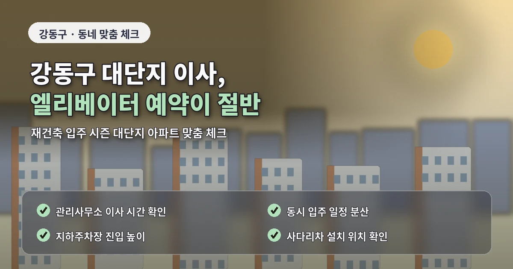

서울 강동구포장이사추천 추가비용 줄이기
강동구 포장이사는
입주 단지와 기존 주거지가 함께 있어
견적을 받을 때 확인할 항목이 많습니다.
천호동, 길동, 암사동, 명일동,
고덕동 일대는 아파트 단지와
빌라, 오피스텔이 섞여 있어
작업 방식이 단순하지 않습니다.

포장이사 비용은
기본 운반비만으로 결정되지 않습니다.
비용과 견적이 달라지는 핵심 기준
건물 진입로,
주차 가능 시간,
엘리베이터 사용 규정,
사다리차 설치 가능 여부,
짐의 분해와 조립 범위가
전체 견적에 영향을 줍니다.
강동구에서 포장이사 업체를 비교할 때는
현재 거주지의 조건을 먼저 정리해야 합니다.
가져갈 짐과 버릴 짐을 나누고,
대형가전 이동 여부,
분해가 필요한 가구,
파손에 주의해야 할 물건을
상담 전에 정리해두면 좋습니다.
특히 고덕동과 명일동처럼
대단지 아파트가 많은 지역은
관리사무소 이사 예약이 중요합니다.
엘리베이터 사용 시간이 정해져 있거나
보양 작업을 요구하는 단지도 있어
이 부분을 업체에 미리 알려야 합니다.
업체 비교 전 확인해야 할 사항
예약 시간이 맞지 않으면
작업 대기 시간이 생기고
그만큼 추가비가 붙을 수 있습니다.
강동구 포장이사 비용을 낮추려면
가장 먼저 불필요한 짐을 줄이는 것이 좋습니다.
오래 사용하지 않은 가구,
고장 난 소형가전,
이사 후 버릴 가능성이 높은 물건은
이사 전에 정리하는 편이 효율적입니다.
차량 크기와 작업 시간이 줄어들면
견적에도 긍정적인 영향을 줄 수 있습니다.
견적 비교를 할 때는
총액만 보는 방식은 피해야 합니다.
어떤 업체는 포장재와 보양을 포함하고,
어떤 업체는 일부 작업을 별도로 계산합니다.
추가비용을 줄이는 준비 방법
따라서 포장 범위,
주방 정리 포함 여부,
옷장 박스 제공,
침대와 장롱 분해 조립,
냉장고와 세탁기 이동 조건을
같은 기준으로 비교해야 합니다.
강동구 포장이사추천 정보를 찾을 때
잘하는곳이라는 표현만 보면
선택 기준이 모호해질 수 있습니다.
실제로는 시간 약속,
작업 인원 배치,
물건 보호 방식,
추가비 안내 방식이 중요합니다.
계약 전에는 업체가 설명한 내용을
견적서나 문자로 남겨두는 것이 좋습니다.
사다리차는 강동구에서도
비용 차이를 만드는 주요 항목입니다.
엘리베이터 사용이 가능하더라도
대형 가구가 들어가지 않거나
관리 규정상 운반 제한이 있으면
사다리차가 필요할 수 있습니다.
계약 전 마지막 체크포인트
이 경우 층수, 도로 폭,
차량 주차 위치를 함께 확인해야
정확한 금액을 알 수 있습니다.
이사 날짜도 견적에 영향을 줍니다.
주말, 월말, 손 없는 날은
문의가 몰려 예약이 빨리 차고
비용도 높아질 수 있습니다.
가능하다면 평일 오전이나
월중 일정을 검토하는 것이
합리적인 선택이 될 수 있습니다.
강동구 포장이사는
추가비용을 줄이는 준비가 중요합니다.
짐 정리, 관리사무소 예약,
엘리베이터 사용 시간,
사다리차 가능 여부,
가전과 가구 분해 범위를 미리 확인하면
상담 과정이 빨라지고
비교견적도 더 정확해집니다.
강동구는 최근 입주 단지와
기존 아파트 단지가 함께 있어
이사 수요가 특정 시기에 몰리는 편입니다.
신축 입주가 많은 구간에서는
같은 날짜에 여러 세대가 동시에 이사할 수 있어
엘리베이터 예약 경쟁이 생길 수 있습니다.
따라서 이사 날짜가 확정되면
업체 상담보다 먼저 관리사무소에
이사 가능 시간대를 확인하는 것이 좋습니다.
이 과정이 빠지면
원하는 업체와 견적이 맞아도
실제 작업 시간이 맞지 않을 수 있습니다.
강동구 포장이사 견적을 받을 때는
출발지와 도착지의 조건을
동시에 비교해야 합니다.
출발지는 엘리베이터 사용이 가능하지만
도착지가 저층 빌라라면
계단 이동 비용이 생길 수 있습니다.
반대로 출발지는 빌라이지만
도착지가 신축 아파트라면
도착지 보양 규정이 더 중요해질 수 있습니다.
업체 선택에서는
작업 인원이 충분한지도 봐야 합니다.
비용을 낮추기 위해
인원이 너무 적게 배치되면
작업 시간이 길어지고
가구나 가전 보호가 소홀해질 수 있습니다.
이사 당일에는
귀중품과 중요 서류를 따로 보관해야 합니다.
현금, 계약서, 신분증,
노트북, 외장하드,
작은 귀중품은 직접 챙기는 것이 안전합니다.
강동구 포장이사 일정 조율 기준
강동구는 고덕동과 명일동처럼 입주 단지가 많은 곳과
천호동, 길동처럼 생활권이 오래 형성된 지역이 함께 있습니다.
따라서 이사 일정은 단순히 원하는 날짜만 정하는 것이 아니라
관리사무소 예약 가능 시간과 차량 진입 조건까지 확인해야 합니다.
신축 단지에서는 엘리베이터 예약이 먼저 마감될 수 있고,
기존 주거지에서는 주차 공간 확보가 더 중요할 수 있습니다.
상담 단계에서 출발지와 도착지 조건을 모두 알려주면
업체가 작업 시간을 더 현실적으로 계산할 수 있습니다.
이 과정이 정확할수록 추가비용 가능성도 낮아집니다.
자주 묻는 질문
A. 최소 3곳 정도 비교하면 평균 비용과 서비스 차이를 보기 좋습니다.
A. 엘리베이터 예약, 보양 규정, 차량 진입 가능 시간을 먼저 확인해야 합니다.
A. 버릴 짐을 미리 정리하고 작업 조건을 정확히 전달하는 것이 좋습니다.